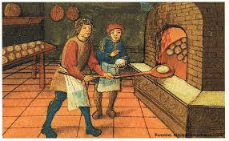
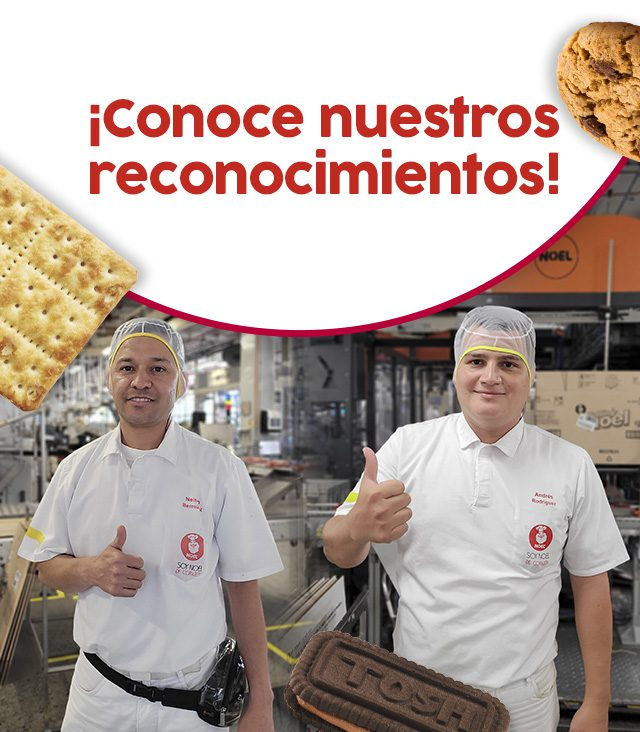

Nuestros Inicios
La Casa de las Galletas comenzó como un pequeño local en el corazón de la ciudad, fundado por María Gómez, una apasionada por la repostería. Desde sus primeros días, nuestra tienda se dedicó a ofrecer galletas frescas, hechas con ingredientes de la más alta calidad, para brindar un sabor único y casero.
Un Crecimiento Imparable
Con el paso de los años, nuestra tienda fue creciendo, y no solo en tamaño, sino también en variedad. Introdujimos nuevas recetas, como las galletas de chispas de chocolate, galletas rellenas, y opciones sin gluten, para poder llegar a más personas y hacer que todos pudieran disfrutar de nuestras delicias.

El Secreto de Nuestro Éxito
El secreto de nuestra tienda radica en la pasión por lo que hacemos. Cada galleta es hecha con cariño, cuidando cada detalle desde la selección de los ingredientes hasta la presentación final. Además, nuestra dedicación al servicio al cliente ha sido siempre una de nuestras prioridades.
Reconocimientos y Premios
A lo largo de los años, hemos recibido numerosos premios por la calidad de nuestras galletas, destacándonos en concursos locales e internacionales. Cada uno de estos logros ha sido posible gracias a ustedes, nuestros queridos clientes.
Un Futuro Dulce
Hoy, La Casa de las Galletas sigue siendo un referente en la comunidad, con planes de expansión para llevar nuestras galletas a más rincones del país. Estamos comprometidos a seguir innovando y ofreciendo productos deliciosos que alegren a nuestros clientes.